GUI: Screenshot + Clicksame initial file
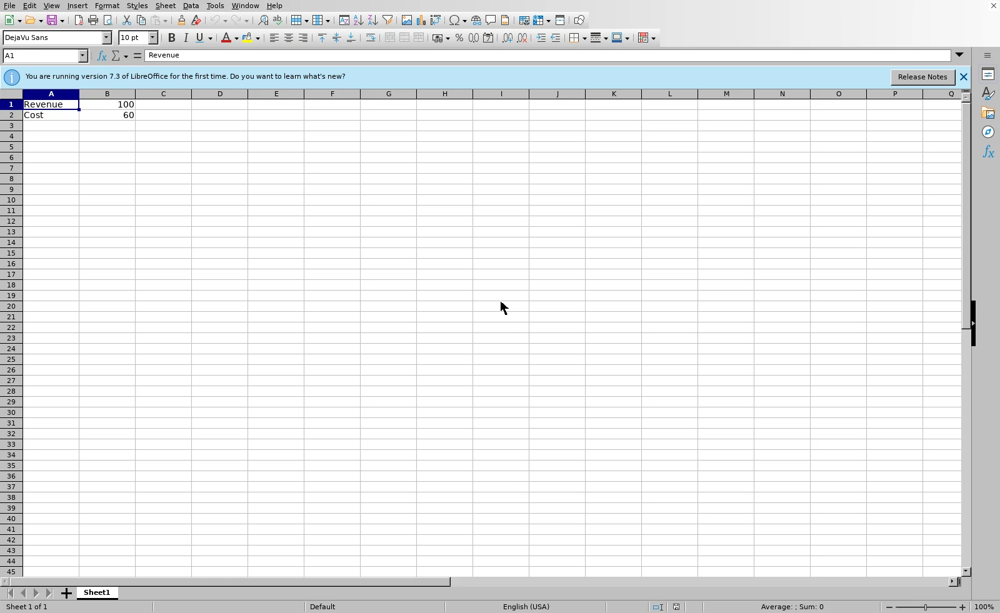
Receives the task instruction and a screenshot of the visible spreadsheet surface.
Replacing Screenshot-and-Click with Structured State and Semantic Actions
1Shanghai Jiao Tong University
sharryXR@sjtu.edu.cn · chenlusz@sjtu.edu.cn
TL;DR: ASIL replaces visual motor control with structured software state and semantic actions. Closed models score above 80 overall, while repaired screenshot control reaches 6.6 and 26.6 on the same 380 tasks.
One task, two interfaces
Follow the same LibreOffice payroll task from instruction to outcome. GUI control operates through pixels and motor events; ASIL operates through task-relevant state and one semantic action.
Create a payroll sheet with nine specified columns and exactly ten complete employee rows. Net Pay must equal Base Salary + Position Allowance + Performance Bonus - Insurance - Tax.

The GUI reveals a rendered projection. ASIL exposes the document state needed to reason about sheets, cells, values, and constraints.
observation = screenshot(width=1600, height=981) hidden_state = unavailable
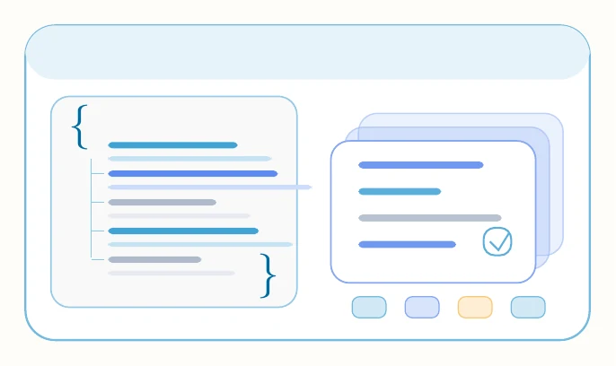
source: file_parse sheet: Sheet1 | populated_cells: 4
The same semantic intent expands into a long coordinate-sensitive GUI sequence, or one validated document operation under ASIL.
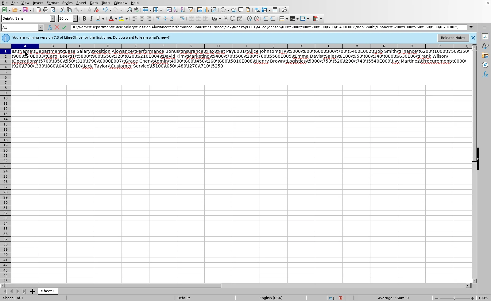
click(cell) -> type(text) -> press(tab) repeat across rows and columns
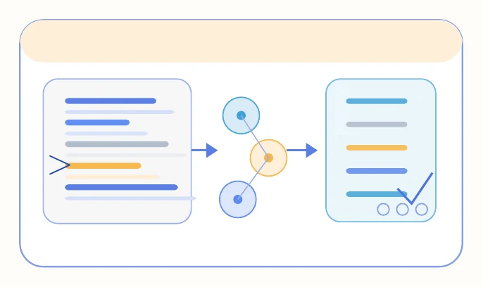
{"action":"modify_file",
"operations":99, "target":"test.ods"}
The evaluator checks the final spreadsheet state rather than the action history. The screenshot-driven run exhausts its budget; ASIL passes after one semantic action.
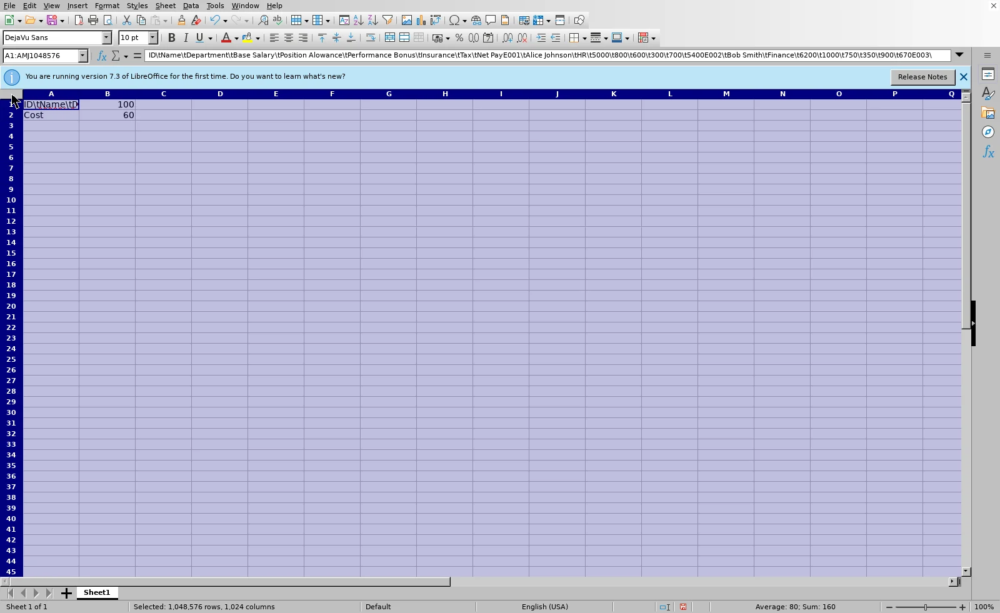
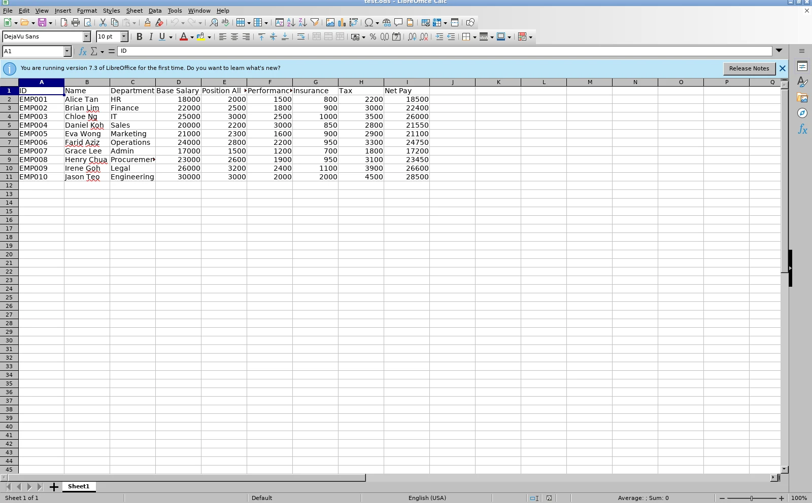
Abstract
Screenshot-and-click is an inefficient interface for software-operating agents: screenshots are state-incomplete, while GUI actions are brittle, semantically weak, and poorly matched to long-horizon planning.
ASIL exposes software through structured JSON observations and code-executable semantic actions, using the deepest feasible open access path for each application. The implementation spans 15 applications, 300 single-application tasks, and 80 multi-application tasks. Closed models exceed 80 overall while executing fewer than five ASIL actions per task; repaired 50-step screenshot control reaches 6.6 and 26.6 for GPT-5.4 and sonnet4.6. The structured modality also supports compact, verifiable data for SFT and evaluator-backed on-policy RL.
The interface mismatch
Modern agents already reason in text and code, yet graphical software forces them through a presentation layer designed for people. One semantic intent becomes a sequence of clicks, drags, key presses, and repeated visual grounding.
ASIL changes the observation-action contract while preserving the task, initial artifact, and software-aware evaluator.
pixels -> coordinates -> motor events
Visible projection, long action horizon, layout-sensitive execution.
structured state -> semantic action -> check
Task-relevant objects, executable intent, replayable validation.
Method
ASIL normalizes reviewed file parsers, native scripts, structured commands, and service APIs into one agent-facing observation-action protocol.
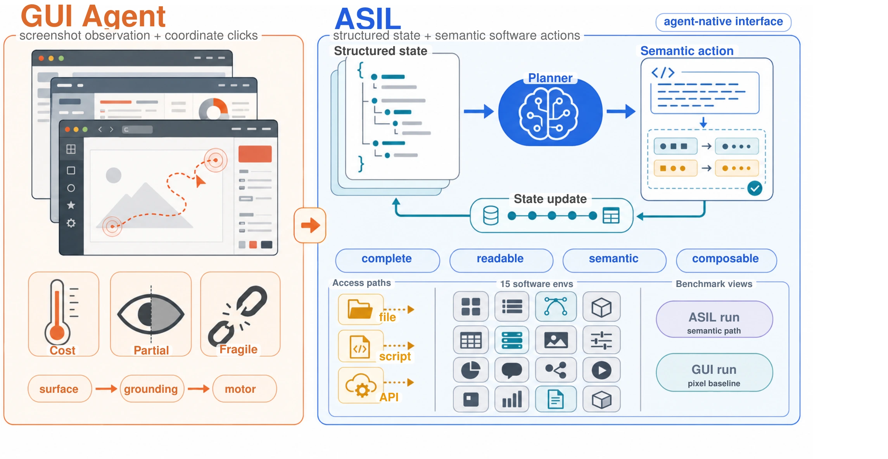
Parse open document and project formats, then apply reviewed structural mutations.
6 implementations: Inkscape, LibreOffice, draw.io, JupyterLabUse the application's own scripting environment or editable project graph.
4 implementations: Blender, GIMP, Kdenlive, AudacityBridge REST, WebSocket, filesystem, or desktop-service state into the shared contract.
5 implementations: OBS, Gitea, code-server, Thunderbird, NautilusSemi-automatic ASILization
The public onboarding framework automates repeatable assembly and validation after a human has identified a trustworthy observation and action path.
Classify direct, bridge-assisted, or out-of-scope access from cited evidence.
Compile a typed interface plan into an extension bundle and action schema.
Fail closed on invalid evidence, permissions, transport, or operation contracts.
Run observation-first host and Docker checks with explicit action gates.
Recompute hashes, provenance, audit results, and validated state changes.
One GPT-5.4 call compiled a reviewed 97-line API profile into one observation view and two semantic actions.
Interface discovery, parser or native-bridge implementation, evaluator design, GUI synchronization, rendering, and final benchmark acceptance are not delegated to the generator.
Results
Strict success on the shared 380-task benchmark. GUI rows are shown only where the accepted paper reports matched repaired controls.
| Model | Interface | Budget | Overall (380) |
|---|---|---|---|
| Kimi K2.5 | ASIL | <5 avg. | 84.8 |
| GPT-5.4 | ASIL | 15 max | 81.6 |
| GPT-5.4 | Screenshot GUI | 50 max | 6.6 |
| sonnet4.6 | ASIL | 15 max | 81.2 |
| sonnet4.6 | Screenshot GUI | 50 max | 26.6 |
| sonnet4.6 | Screenshot GUI | ≤15 | 17.9 |
| Qwen3.6-plus | ASIL | 15 max | 81.1 |
| Qwen3.5-27B | ASIL | 15 max | 75.8 |
ASIL exceeds LibreOffice's UNO API by 28-38 strict points on matched tasks, while matching draw.io's MCP content contract for GPT-5.4. The result is an interface claim, not a claim that every ASIL access path dominates every mature native interface.
Training under ASIL
The same evaluator filters demonstrations, supplies rollout rewards, and evaluates the resulting checkpoints on all 380 tasks.
Application coverage
Representative real software surfaces selected from evaluated benchmark runs. Open any image to inspect it at full size.
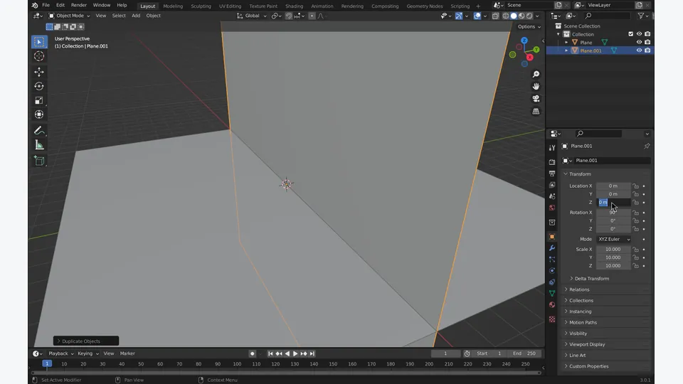
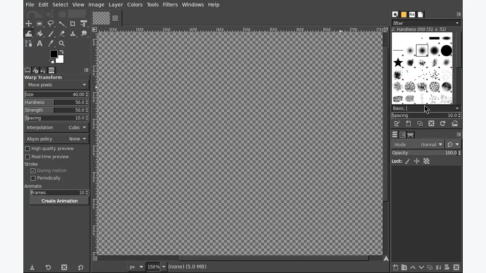
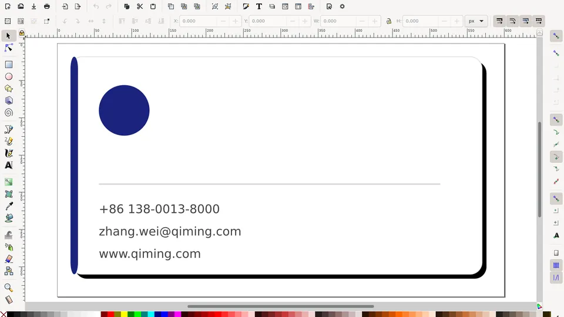
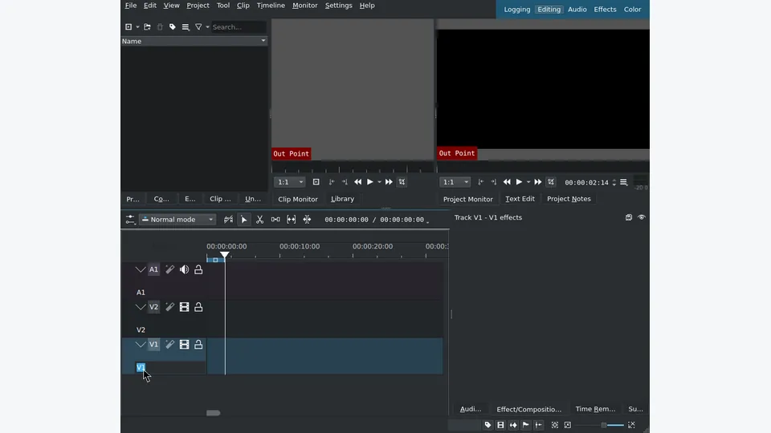
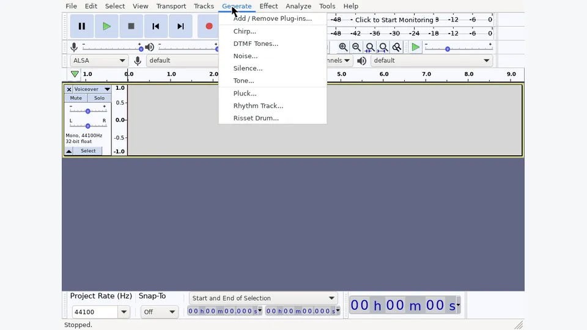
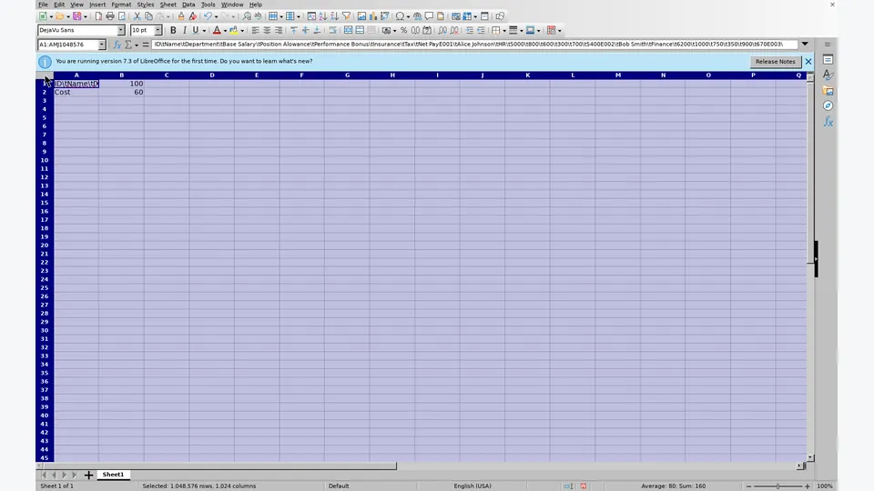
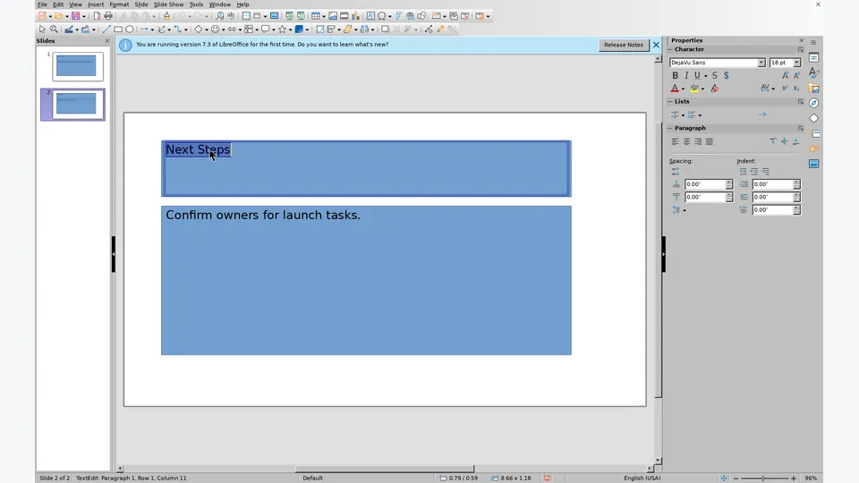
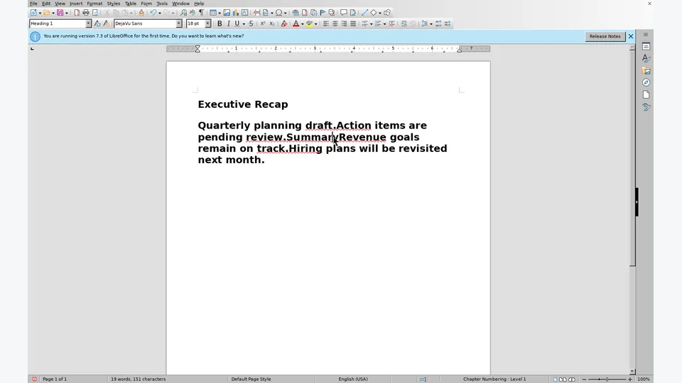
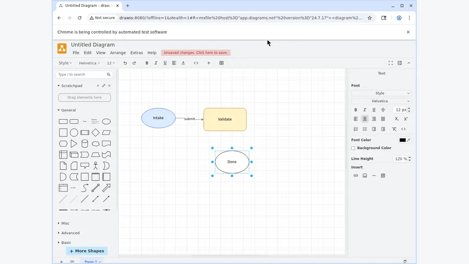
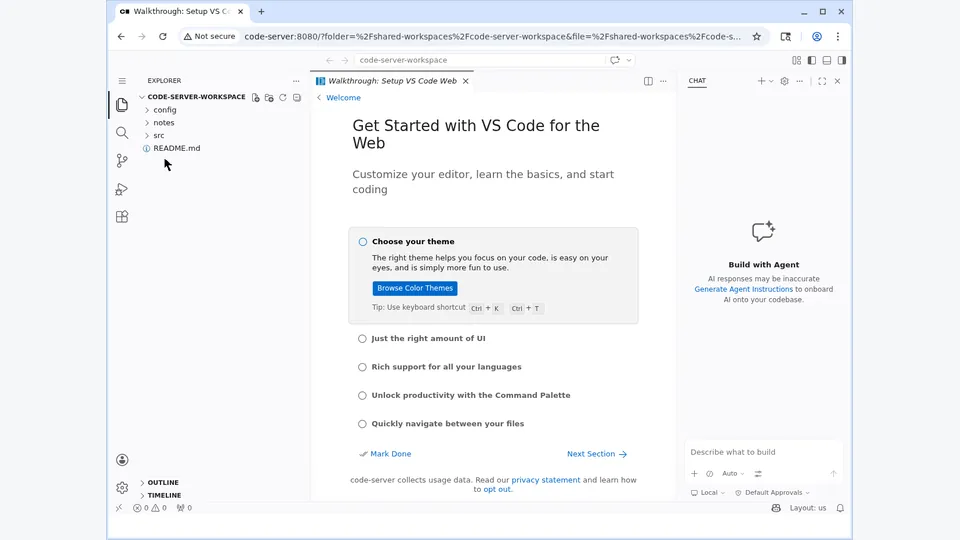
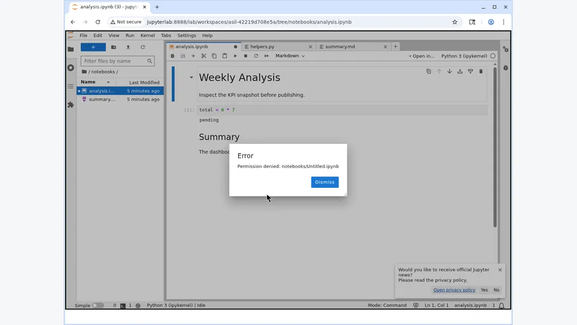
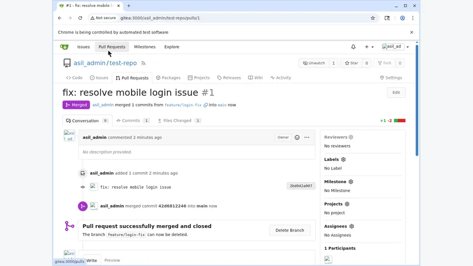
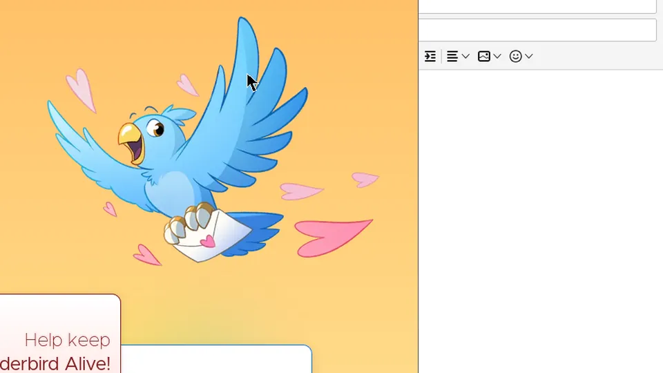
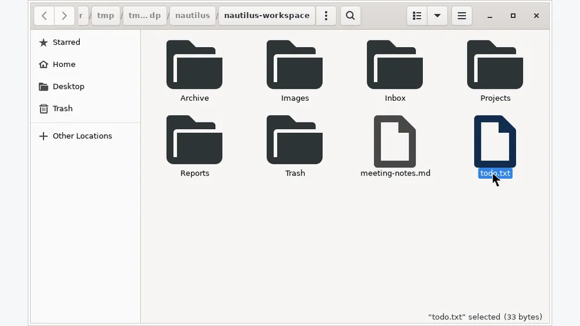
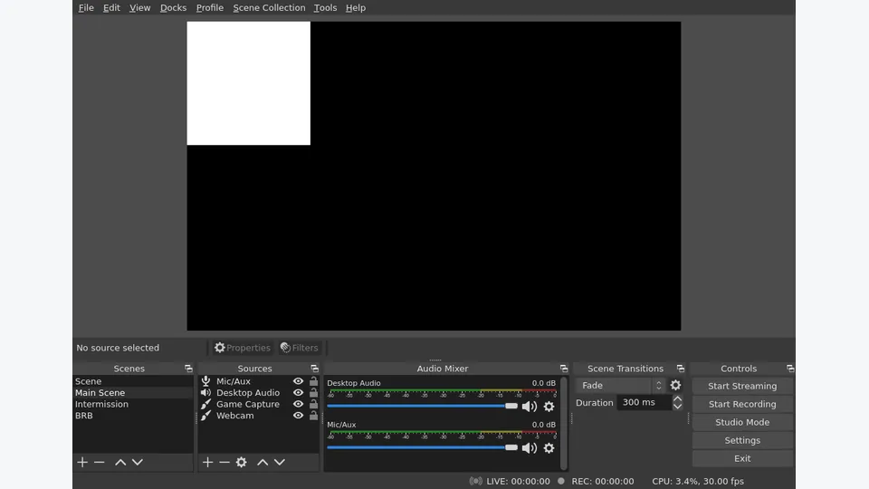
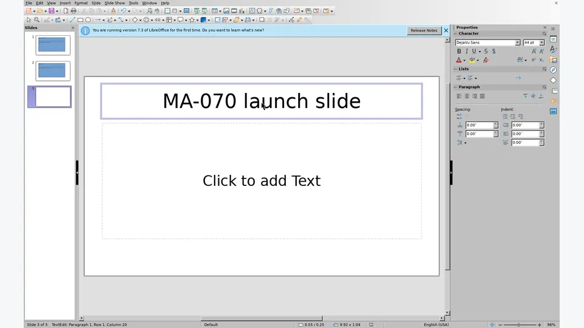
The gallery illustrates benchmark coverage; it does not represent a release of per-task evaluation trajectories.
Open resources
Code, released checkpoints, benchmark tasks, and training data are maintained as separate public resources.
Runtime protocol, 15 application adapters, evaluators, baselines, containers, and the assisted onboarding framework.
Apache-2.0 / inference + evaluation View on GitHubSelected Qwen3.5-2B and Qwen3.5-9B SFT and RL checkpoints reported in the paper.
2B + 9B / SFT + RL Browse modelsTask definitions for the 380-task main benchmark, the 80-task hard suite, and the easy60 comparison band.
300 single-app + 80 multi-app Browse benchmark Runtime imagesPrepared supervised and rollout-curriculum data used for the released ASIL post-training experiments.
SFT data + RL curriculum Browse training dataCitation
@inproceedings{xie2026asil,
title = {{ASIL}: Replacing Screenshot-and-Click with
Structured State and Semantic Actions},
author = {Xie, Rui and Chen, Lu},
booktitle = {Findings of the Association for Computational
Linguistics: EMNLP 2026},
year = {2026}
}